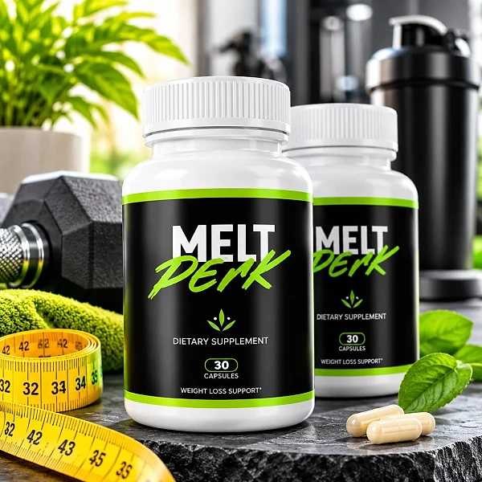
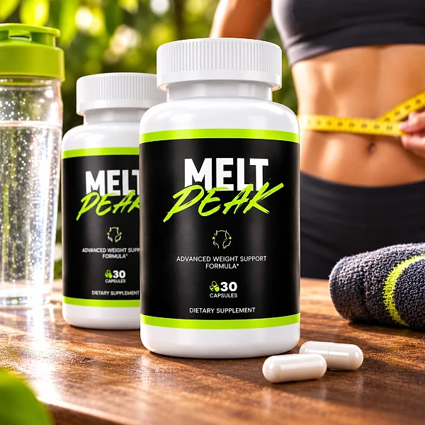
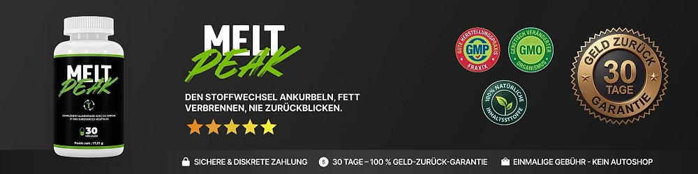

Was ist MeltPeak und wie wirkt es?
MeltPeak ist ein Nahrungsergänzungsmittel in Kapselform für Erwachsene, das laut offizieller Website ein gesundes Gewichtsmanagement und das Stoffwechselgleichgewicht unterstützen soll. Die Marke beschreibt es als tägliche Ergänzung, die im Rahmen eines ausgewogenen Lebensstils eingenommen wird, und nicht als Wundermittel.
Jede Flasche enthält laut Etikett 30 Kapseln, und die Verzehrempfehlung lautet eine Kapsel pro Tag. Die Produktseite kombiniert in ihrer Beschreibung Pflanzenextrakte, Ballaststoffe, Probiotika und Stoffwechsel-Nährstoffe, darunter Berberin, Zimtrinden-Extrakt, Konjak-Glucomannan, Vitamin B2 und zwei Bakterienkulturen.
Wie wirkt es? Die Website nennt vier Bereiche, die die Formel unterstützen soll: den Energiestoffwechsel, die Verdauung und Darmbalance, das Stoffwechselgleichgewicht und den antioxidativen Schutz. Dazu kommen Appetitkontrolle und Sättigungsgefühl, für die vor allem die Ballaststoffe aus der Konjakwurzel genannt werden.
Bemerkenswert ist, wie deutlich die Marke ihre eigenen Grenzen formuliert: MeltPeak sei kein Medikament und kein Abnehmmittel, sondern ein tägliches Nahrungsergänzungsmittel zur Unterstützung einer gesunden Stoffwechselfunktion. Diese Zurückhaltung ist ein gutes Zeichen, denn seriöse Produkte versprechen keine schnellen Kilos.
MeltPeak wird über Digistore24 verkauft, eine etablierte Plattform für digitale und physische Produkte. Als Kontakt nennt die Website den Support der Marke Vital Roots, die auch hinter anderen Nahrungsergänzungsmitteln steht. Auf der Website meltpeak.site sind außerdem die Rückerstattungsrichtlinie, die Lieferbedingungen, ein Haftungsausschluss und die Kontaktdaten der Marke veröffentlicht.
Wichtig ist eine realistische Erwartung: Die Ergebnisse können von Person zu Person variieren. Ein Nahrungsergänzungsmittel ersetzt keine ausgewogene, abwechslungsreiche Ernährung, keine Bewegung und keinen gesunden Schlaf, wie auch das Etikett ausdrücklich betont.
MeltPeak ist ein Nahrungsergänzungsmittel. Es ist nicht dazu bestimmt, Krankheiten zu diagnostizieren, zu behandeln, zu heilen oder ihnen vorzubeugen, und es ersetzt weder ärztlichen Rat noch eine verordnete Behandlung.
MeltPeak Inhaltsstoffe
Laut der Produktseite der offiziellen Website liefert eine Kapsel MeltPeak die folgende Kombination:
Vitamin B2 (Riboflavin), 25 mg und Alpha-Liponsäure, 25 mg: laut Website für den Energiestoffwechsel.
Berberin HCl, 15 mg, Zimtrinden-Extrakt 10:1, 100 mg und Feigenkaktus-Extrakt 4:1, 100 mg: für das Stoffwechselgleichgewicht.
Konjak-Extraktfaser (90 % Glucomannan), 50 mg: ein Ballaststoff für Sättigung und Verdauung.
Mangostan-Pulver, 100 mg, Kurkuma-Extrakt (95 % Curcumin), 15 mg und Resveratrol, 12 mg: antioxidative Unterstützung.
Bifidobacterium breve und Akkermansia muciniphila, je 1 Milliarde KBE: Kulturen für die Darmbalance.
Für die Pflanzenextrakte und die Bakterienkulturen ist kein Nährstoffbezugswert festgelegt. Die Website betont, dass die Formel mehrere Wirkstoffe kombiniert, statt auf einen einzelnen Inhaltsstoff zu setzen.
Ein Hinweis ist uns wichtig: Das Etikettbild auf derselben Website zeigt eine andere Zusammensetzung, nämlich Chrom (100 µg, 250 % des Nährstoffbezugswerts) mit Grüntee-Extrakt, Apfelessig, Berberin-HCl (85 mg), Ingwer, Zimtkassie, Bitterorange, Cayennepfeffer, Banaba, Ginseng und Resveratrol. Prüfen Sie deshalb das Etikett auf der Flasche, die Sie erhalten, und besprechen Sie es bei Bedarf mit Ihrem Arzt oder Apotheker.
MeltPeak Nebenwirkungen
Die offizielle Website nennt keine bekannten Nebenwirkungen von MeltPeak, veröffentlicht aber klare Warnhinweise. Das Produkt ist nicht für Personen unter 18 Jahren und nicht für schwangere oder stillende Frauen geeignet. Die empfohlene Tagesdosis darf nicht überschritten werden.
Die Marke rät, vor der Einnahme einen Arzt zu konsultieren, wenn Sie Medikamente einnehmen oder eine Erkrankung haben. Das Etikett enthält zudem einen eigenen Hinweis für Diabetiker und Menschen mit Neigung zu Unterzuckerung: Chrom kann die Insulinempfindlichkeit verstärken und den Blutzuckerspiegel beeinflussen, deshalb sollte das Produkt in diesem Fall nur unter ärztlicher Aufsicht eingenommen werden.
Allgemein bekannt ist außerdem, dass Ballaststoffe wie Glucomannan und Pflanzenstoffe wie Berberin in den ersten Tagen bei manchen Menschen Blähungen oder ein Völlegefühl auslösen können. Ballaststoffkapseln sollten immer mit ausreichend Wasser eingenommen werden. Wer empfindlich auf Koffein reagiert, sollte wissen, dass das Etikett Grüntee-Extrakt und Bitterorange nennt.
Wie bei jedem neuen Nahrungsergänzungsmittel gilt: Halten Sie sich genau an die Verzehrempfehlung und achten Sie in den ersten Tagen darauf, wie Ihr Körper reagiert. Treten Beschwerden auf, setzen Sie die Einnahme ab und sprechen Sie mit Ihrem Arzt.
Verwenden Sie das Produkt nicht, wenn der Originalitätsverschluss beschädigt ist oder fehlt, und bewahren Sie es außerhalb der Reichweite von Kindern auf. Die individuelle Verträglichkeit kann variieren.
MeltPeak Dosierung
Die Verzehrempfehlung ist einfach: Erwachsene nehmen eine (1) Kapsel täglich als Nahrungsergänzungsmittel ein. Eine Flasche mit 30 Kapseln reicht damit für etwa einen Monat.
Die offizielle Website empfiehlt, die Kapsel vorzugsweise 15 bis 30 Minuten vor einer Mahlzeit mit einem Glas Wasser einzunehmen. Das passt zu einer Formel mit Ballaststoffen, die vor dem Essen ihre Wirkung auf das Sättigungsgefühl entfalten sollen. Viele Anwender wählen dafür das Frühstück oder das Mittagessen, damit die Einnahme zur festen Routine wird.
Regelmäßigkeit ist bei Nahrungsergänzungsmitteln wichtiger als die genaue Uhrzeit. Die Rückerstattungsrichtlinie der Marke empfiehlt sogar, dem Produkt mindestens drei Monate Zeit zu geben, bevor man eine Entscheidung trifft.
Überschreiten Sie die empfohlene Tagesdosis nicht. Mehr Kapseln führen nicht zu besseren Ergebnissen, und eine vergessene Kapsel wird nicht am nächsten Tag doppelt eingenommen. Wenn Sie Medikamente einnehmen, Diabetiker sind oder eine Erkrankung haben, besprechen Sie die Einnahme vorher mit Ihrem Arzt.
Zur Aufbewahrung schreibt das Etikett vor, das Produkt an einem kühlen, trockenen Ort bei unter 30 °C zu lagern und außerhalb der Reichweite von Kindern aufzubewahren. MeltPeak ergänzt eine ausgewogene Ernährung und Bewegung, ersetzt sie aber nicht. Die Ergebnisse können von Person zu Person variieren.
MeltPeak – Rückerstattung
MeltPeak wird laut offizieller Website mit einer 30-Tage-Geld-zurück-Garantie verkauft, und zwar ganz ohne Rückfragen. Die Frist beginnt laut Rückerstattungsrichtlinie mit dem Zahlungsdatum.
Schritt 1 – Frist prüfen: Kontrollieren Sie anhand Ihrer Bestellbestätigung, ob Sie sich noch innerhalb der 30 Tage ab dem Zahlungsdatum befinden.
Schritt 2 – Support kontaktieren: Schreiben Sie eine E-Mail an contact@vital-roots.site und setzen Sie „Rückerstattungsanfrage“ in die Betreffzeile, damit Ihre Anfrage vorrangig bearbeitet wird. Eine ausführliche Begründung ist laut Website nicht nötig.
Schritt 3 – Flaschen zurücksenden: Senden Sie alle Flaschen zurück, egal ob leer oder voll, geöffnet oder nicht, zusammen mit dem Lieferschein und einer Notiz mit Ihrem vollständigen Namen, Ihrer E-Mail-Adresse und optional der Bestellnummer. Die Rückerstattungsseite nennt als Adresse: c/o MeltPeak, Kleine Esch 669, 2841 MK Moordrecht, Niederlande. Die Kosten der Rücksendung trägt der Kunde.
Schritt 4 – Erstattung abwarten: Laut Website wird die Erstattung nach Eingang des Pakets bearbeitet und per E-Mail bestätigt. Je nach Bank dauert es etwa 5 bis 10 Tage, bis der Betrag auf der Abrechnung erscheint.
Lesen Sie die vollständigen Bedingungen auf der offiziellen Website vor der Bestellung und bewahren Sie die Bestellbestätigung sowie die Sendungsnummer Ihrer Rücksendung gut auf. Bei Fragen zur Garantie hilft der Support per E-Mail weiter, am besten noch bevor Sie die Flaschen zurücksenden.
MeltPeak – Wo kaufen?
MeltPeak wird über seine offizielle Website meltpeak.site bestellt, und die Zahlung läuft über Digistore24. Laut Website erhalten Käufer innerhalb von 60 Stunden eine E-Mail mit der Sendungsnummer, und die meisten Bestellungen innerhalb der EU treffen nach 5 bis 7 Werktagen ein.
Flaschen von unbekannten Händlern können identisch aussehen, doch nichts erlaubt es, ihre Herkunft oder ihre Lagerung zu überprüfen. Für ein Nahrungsergänzungsmittel ist das eine echte Frage der Qualität und Sicherheit, und ein Kauf außerhalb der offiziellen Website ist möglicherweise nicht durch die 30-Tage-Garantie abgedeckt. Auch Angebote auf Online-Marktplätzen sollten Sie deshalb mit Vorsicht betrachten.
Deshalb bestellen die meisten Käufer MeltPeak direkt an der Quelle. Die offizielle Website sichert den Zugang zum authentischen Produkt, zum Kundenservice und zur vollständigen Garantie.
Achten Sie beim Bezahlen darauf, dass Sie sich auf der offiziellen MeltPeak-Website befinden, um jede Fälschung zu vermeiden. Prüfen Sie die Adresse in der Browserzeile und den Bestellvorgang über Digistore24, denn nur so gelten die Garantie und der Kundenservice der Marke ohne Einschränkungen. Bei Fragen hilft der Kundenservice unter contact@vital-roots.site weiter.
Um sicherzugehen, dass Sie das Originalprodukt erhalten, besuchen die meisten Nutzer die offizielle Website.
Ist MeltPeak Betrug?
Nach den Informationen der offiziellen Website scheint MeltPeak kein Betrug zu sein. Es handelt sich um ein echtes Nahrungsergänzungsmittel, das über Digistore24 verkauft wird, eine etablierte Plattform, und es richtet sich an Erwachsene, die ihr Gewichtsmanagement und ihren Stoffwechsel im Alltag unterstützen möchten.
Positiv fällt auf, dass die Marke eine klare Verzehrempfehlung, Warnhinweise, eine Kontaktadresse und ein schrittweises Verfahren für die Rückerstattung veröffentlicht. Auch der Ton bleibt zurückhaltend: Die Website sagt selbst, MeltPeak sei kein Medikament und kein Abnehmmittel, und weist darauf hin, dass die Ergebnisse variieren können.
Es gibt aber Punkte, die man kennen sollte. Die Zutatenliste der Produktseite und das Etikettbild stimmen nicht überein, deshalb zählt das Etikett auf Ihrer Flasche. Die Rücksendeadresse ist nicht einheitlich: Die Rückerstattungsseite nennt die Niederlande, eine Bestellseite eine Adresse in den USA, und das Impressum nennt ein Unternehmen in Brasilien. Außerdem unterscheiden sich die Telefonnummern auf der Kontakt- und der Lieferseite in der letzten Ziffer.
Unser Rat: Lesen Sie das Etikett sorgfältig, bewahren Sie die Bestellbestätigung gut auf und sprechen Sie mit Ihrem Arzt, wenn Sie Medikamente einnehmen, Diabetiker sind oder eine Erkrankung haben.
Für Erwachsene, die ein einfaches tägliches Nahrungsergänzungsmittel zur Unterstützung von Stoffwechsel und Verdauung suchen, kann MeltPeak eine Option sein, am besten über die offizielle Website bestellt und mit der 30-Tage-Garantie im Rücken.
Wer Produktdetails überprüfen oder die aktuelle Verfügbarkeit prüfen möchte, ist auf der offiziellen MeltPeak-Website am sichersten aufgehoben.

Verfügbarkeit auf der offiziellen Website prüfen
